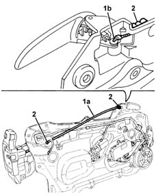
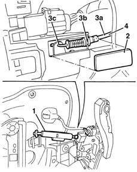

7005C50 front side door interior opening mechnism r-r for repair or replacement with door panel removed
- Path
- Procedures > 70 FITTINGS > 7005 PASSENGER COMPARTMENT FRONT SIDE DOORS > 7005C front lock controls > 7005C50 front side door interior opening mechnism r-r for repair or replacement with door panel removed
- Kind
- repair procedure (removal / refitting; the operation number is the code)
- Applies to
- all engines; all production periods
- Interactive page
- https://sloeber94.github.io/elrnDB-lYpsln/en/#/2429494
Applies to: all engines; all production periods
 Removing
Removing
 Refitting
Refitting7005D14 front side door descending window glass - r r with door panel (and mount frame) removed
7005A08 interior support frame of one side door r r with door panel removed
1. Disconnect the idler device (1a) from the retainer (1b) for the interior opening handle.
2. Release the cable from the retainers.

Applies to: all engines; all production periods
1. Release and open the anti-break in protection.
2. Remove the lock retainer access cover.
3. Release the idler device (3a) from the lock retainers (3b) and (3c).
4. Remove the idler device assembly.

Applies to: all engines; all production periods
Refitting
RemovingCheck that the return device is not damaged.
Position the device and attach it to the lock retainers.
Fit the cover.
Position the anti-break in protection correctly.
Attach the cable to the retainers.
Connect the idler device to the interior handle retainer.
7005A08 interior support frame of one side door r r with door panel removed
7005D14 front side door descending window glass - r r with door panel (and mount frame) removed
Topics linked from this page (2)
- 7005A08 interior support frame of one side door r r with door panel removed
- 7005D14 front side door descending window glass - r r with door panel (and mount frame) removed